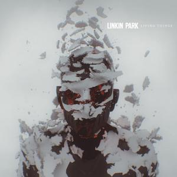
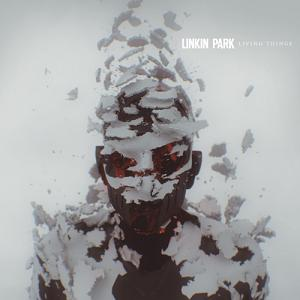

Linkin Park (LP) – amerykański zespół muzyczny wykonujący szeroko pojętą muzykę rockową i metalową. Zespół powstał w 1996 roku w Agoura Hills w Kalifornii. Sławę zyskał w 2000 roku po wydaniu pierwszego albumu, Hybrid Theory. Od tego czasu Linkin Park stali się jedną z najpopularniejszych grup w historii muzyki, sprzedając ponad 100 milionów płyt. Linkin Park wydali siedem albumów studyjnych. Stworzyli wiele międzynarodowych przebojów, jak „Numb”, „In the End”, „What I've Done”, „Castle of Glass”, „Crawling”, „New Divide”, „Burn It Down”, „Faint” czy też „Breaking the Habit”. Zdobyli wiele nagród, w tym dwie Grammy. Zespół zawiesił działalność po samobójstwie wokalisty Chestera Benningtona w 2017 roku.

 
 - "In The End" album: "Hybrid Theory" rok wydania: 2000
- "One Step Closer" album: "Hybrid Theory" rok wydania: 2000
- "Numb" album: "Meteora" rok wydania: 2003
- "Bleed it Out" album: "Minutes to Midnight" rok wydania: 2007
- "What I've Done'" album: "Minutes to Midnight" rok wydania: 2007
- "LOST IN THE ECHO" album: "LIVING THINGS" rok wydania: 2012
- "BURN IT DOWN" album: "LIVING THINGS" rok wydania: 2012
- "CASTLE OF GLASS" album: "LIVING THINGS" rok wydania: 2012
- "IN MY REMAINS" album: "LIVING THINGS" rok wydania: 2012
- "A LIGHT THAT NEVER COMES" album: "RECHARGED" rok wydania: 2013